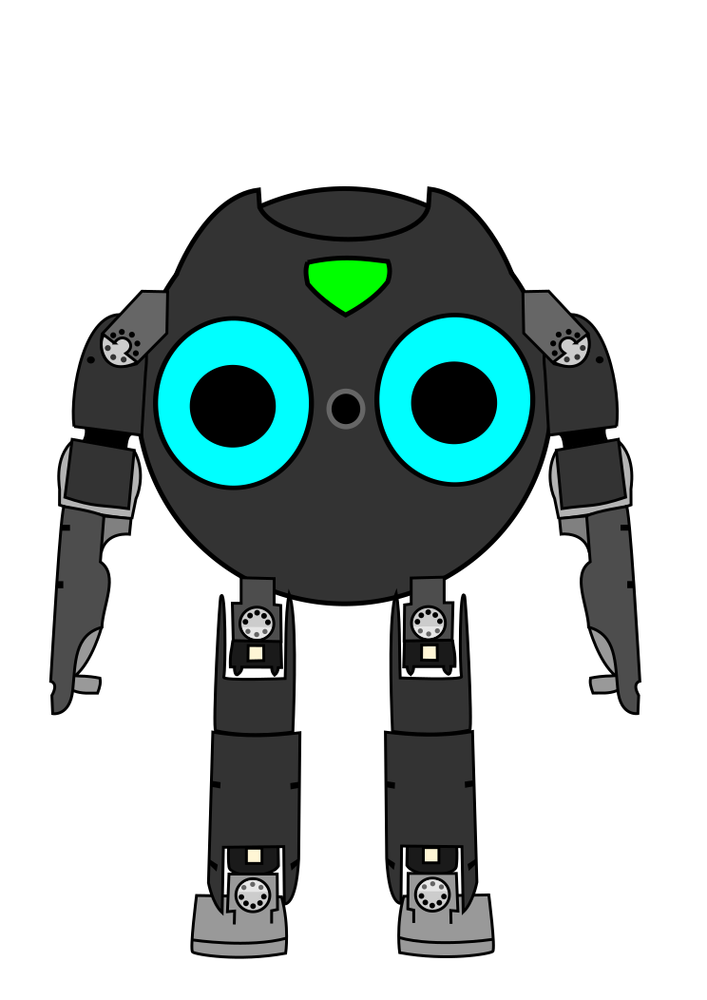

{% macro imu_component() %}
<script type="text/javascript" >
  function quaternionToEuler(q) {
    const { x, y, z, w } = q;

    // Roll (x-axis rotation)
    const sinr_cosp = 2 * (w * x + y * z);
    const cosr_cosp = 1 - 2 * (x * x + y * y);
    const roll = Math.atan2(sinr_cosp, cosr_cosp);

    // Pitch (y-axis rotation)
    const sinp = 2 * (w * y - z * x);
    let pitch;
    if (Math.abs(sinp) >= 1) {
      pitch = Math.sign(sinp) * Math.PI / 2; // use 90 degrees if out of range
    } else {
      pitch = Math.asin(sinp);
    }

    // Yaw (z-axis rotation)
    const siny_cosp = 2 * (w * z + x * y);
    const cosy_cosp = 1 - 2 * (y * y + z * z);
    const yaw = Math.atan2(siny_cosp, cosy_cosp);

    return { roll, pitch, yaw };
  }
</script>


<div class="flex justify-center overflow-hidden"
     x-data="{
      listener: null,
      init() {
        this.listener = new ROSLIB.Topic({
          ros : ros,
          name : '/imu/data',
          messageType : 'sensor_msgs/msg/Imu'
        });
        this.listener.subscribe((message) => {
          const quaternion = message.orientation;
          const euler = quaternionToEuler(quaternion);
          euler.roll = euler.roll/(2*Math.PI)*360
          euler.pitch = euler.pitch/(2*Math.PI)*360
          $refs.logo.style.transform = `rotateZ(${- euler.roll}deg) rotateX(${-euler.pitch}deg)`;
        });
      },
      destroy() {
        this.listener.unsubscribe();
      },
     }" >
    </img>
</div>
{% endmacro %}
